Engine and vehicle basics¶
Basic → Advanced
In one sentence: the Engine settings tell the ECU what kind of engine it is running: how many cylinders, how big, which cycle, the order they fire in and how the coils and injectors are arranged. The Vehicle settings record which car the tune belongs to.
What it does¶
Basic
Before the ECU can fire a single spark it has to know some plain facts about the engine. The Engine settings hold them:
- How many cylinders there are, and how big the engine is.
- Which cycle it runs: four-stroke, two-stroke or rotary. This sets how many crank degrees one full engine cycle takes.
- The firing order: which cylinder fires first, second, third and so on.
- Where each cylinder's top dead centre (TDC) falls in the cycle. On most engines the ECU works this out for you.
- How the coils are wired (distributor, wasted spark or coil-on-plug) and how the injectors are grouped into injection stages.
- When the engine counts as running rather than cranking.
- Two switches that stop all spark or all fuel, for fault-finding.
Nothing here is optional, and there is no Enabled box: every engine has a cylinder count and a firing order. These are the first settings you fill in on a new installation. A wrong value here does not give you a slightly wrong tune. It gives you an engine that will not start, or one that fires the wrong cylinder.
The Vehicle settings are different. They are labels: the car's name, make, model, engine, VIN and notes. Nothing in the firmware reads them. They travel with the tune so that a saved tune file says which car it belongs to.
A new tune has no firing order
In a new tune every firing-order slot is empty (0). The ECU will not fire any coil or injector until you enter a valid firing order. It raises P1651 instead. Setting the firing order is part of every installation, not an optional extra.
How it works¶
Intermediate
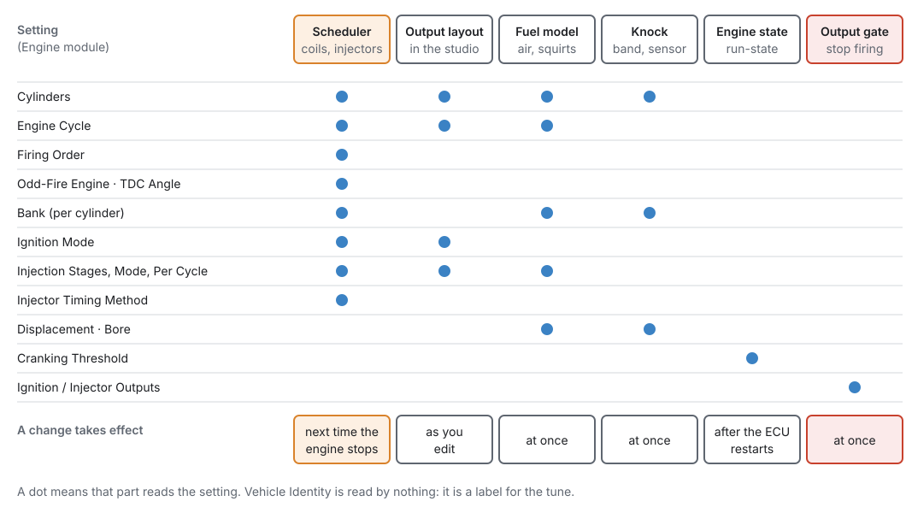
1 · The engine cycle¶
Every angle in the tune, from spark advance to injection timing, is measured inside one engine
cycle. Engine Cycle engine.cycle_type sets how long that cycle is:
| Engine Cycle | Cycle length | Crank revolutions per cycle |
|---|---|---|
| Two-Stroke (360°) | 360° | 1 |
| Four-Stroke (720°) | 720° | 2 |
| Rotary (1080°) | 1080° | 3 |
The cycle length is also used by the trigger decoder. It sets the default repeat rate of a crank-mounted trigger pattern, so changing the cycle changes how the trigger is decoded as well as when things fire (chapter 16).
2 · Firing order and TDC angles¶
The Firing Order is a list of cylinder numbers, one per firing position. The first entry is the cylinder that fires first, the second entry fires second, and so on. A six-cylinder with firing order 1-5-3-6-2-4 stores 1, 5, 3, 6, 2, 4. Only the first Cylinders entries are read. The slots after them should be 0.
The ECU checks the order every time it applies it. It must name every cylinder from 1 to the cylinder count exactly once. A cylinder listed twice, a cylinder missing, or a number larger than the cylinder count all make the order invalid. With an invalid order the ECU will not fire at all: a duplicate would fire one cylinder twice and leave another dead, so it refuses both.
From the order, each cylinder gets a TDC Angle: where in the cycle that cylinder reaches top dead centre on its compression stroke, measured from the reference the trigger defines.
- Even-fire engines (Odd-Fire Engine off, the default): the ECU computes every TDC angle for you. Cylinders fire evenly, so the cylinder in firing position i (counting from 0) gets i × cycle ÷ cylinders. On a four-stroke four-cylinder that is 0°, 180°, 360° and 540°. The ECU writes the results back into the tune, and the studio reads them back after the engine stops.
- Odd-fire engines (Odd-Fire Engine on): the gaps between firings are not equal, so the ECU does not compute anything. You type each cylinder's TDC angle yourself, and the ECU uses exactly what you typed.
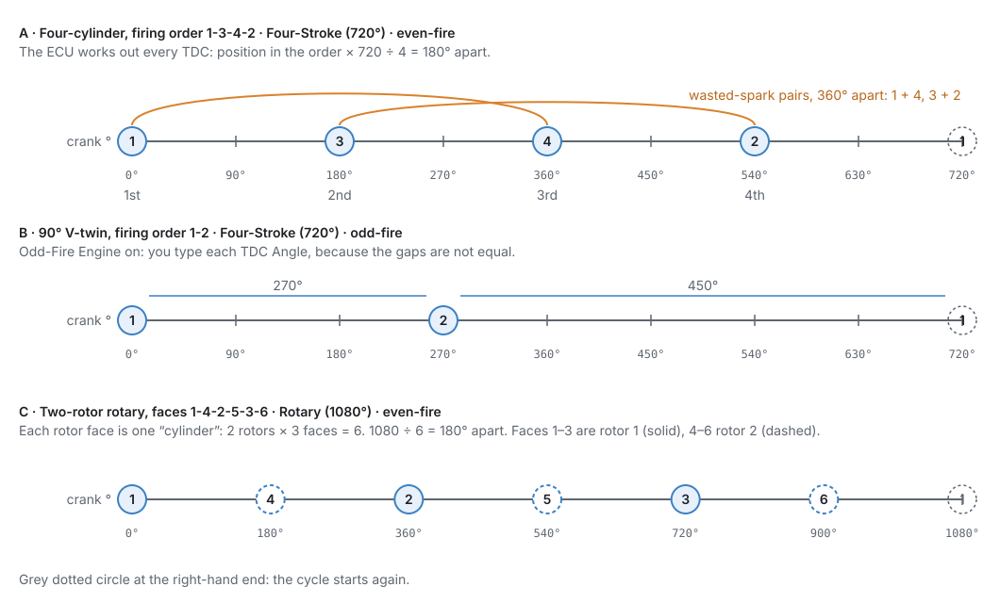
Advanced — rounding on odd cylinder counts
The ECU stores angles in tenths of a degree and divides the cycle by the cylinder count in whole tenths. On counts that do not divide 7200 evenly (7 or 11 cylinders on a four-stroke) the computed angles are rounded down to the nearest 0.1°.
3 · Banks¶
Each cylinder has a Bank, 1 or 2. On an inline engine every cylinder stays on bank 1. On a V engine or a flat engine, put the cylinders of each exhaust side on their own bank. The bank is read by:
- the Bank injection mode, which fires each bank's injectors as one group;
- closed-loop lambda, whose per-bank corrections reach each cylinder through its bank (chapter 23);
- knock, whose Auto sensor choice picks the sensor by bank (chapter 30);
- output rows set to Bank 1 or Bank 2 (chapter 18).
4 · Coils: Ignition Mode¶
Ignition Mode engine.ign_mode says how the coils are wired:
- Single Coil (distributor): one coil serves every cylinder.
- Wasted Spark: each coil output is assigned to one cylinder and also fires that cylinder's companion, the cylinder whose TDC is exactly half a cycle away. The ECU finds the companion from the firing order each time it applies the settings, so changing the firing order re-pairs the coils without moving any output. Wasted spark needs only crank sync.
- Coil-on-Plug: one coil per cylinder. It needs cam phase sync to fire sequentially. Until the cam has been seen it fires companion pairs together.
When you change Ignition Mode, Cylinders or Engine Cycle, the studio lays the coil outputs out again in the standard pattern: coil-on-plug IGNn = cylinder n; wasted spark one coil per pair, named by the lower cylinder of the pair; distributor IGN1 = all cylinders. You can then change any single output by hand on its own page (chapter 18). The firmware does not assign outputs. It fires exactly what the output rows say, and a cylinder with no coil gets no spark (P1653).
5 · Injectors: injection stages¶
The injectors are organised in injection stages, up to four. A stage is a set of injectors that
share one tune. Stage 1 is the primary. A second stage is a staged secondary set, and stages 3 and 4
are further sets. Number of Injection Stages engine.num_inj_stages says how many are active.
The settings of higher stages are kept but not used.
Each stage has its own row on the Fuel System page:
- Injection Mode: how this stage fires its injectors.
- Sequential: each injector once per cycle, timed to its own cylinder. It needs cam phase sync, and it is the only mode that can apply per-cylinder fuel trims. Until the cam has been seen, it fires every revolution with half the fuel each time.
- Semi-Sequential: each injector twice per four-stroke cycle, once per crank revolution. It needs crank sync only.
- Multi-Point: every injector of the stage at once, Injections Per Cycle times per cycle. Only overall corrections apply.
- Bank: the injectors grouped by cylinder bank, each bank fired together, Injections Per Cycle times per cycle. Per-bank corrections apply.
- Sequential-Any-Sync: once per cycle at a cylinder's TDC, not necessarily its own. Works in any sync state.
- Injections Per Cycle: how many times each injector fires per cycle. Only Multi-Point and Bank read it. The fuel for the cycle is split across the squirts, so raising it gives more, smaller squirts, not more fuel.
- # of Injector Outputs: how many injectors a Bank or Multi-Point stage has. Only the studio reads this, to lay out that many injector outputs. Per-cylinder modes always get one injector per cylinder.
Injector Timing Method engine.injector_timing_method says what the injection angle in the fuel
tables means. With End of Injection (the default) the angle is where the squirt ends: the ECU
opens the injector one pulse-width earlier, so the fuel always finishes at the same point however long
the pulse is. With Start of Injection the angle is where it opens.
Injector flow, dead time and the fuel tables themselves are not Engine settings. They belong to the fuel chapter (chapter 19).
6 · Size: displacement and bore¶
Displacement engine.displacement is the total swept volume in cc. The fuel model uses it to work
out the air each cylinder takes in: displacement ÷ cylinders on a piston engine. On a rotary it divides
by the number of rotors, because a rotary's quoted capacity counts one chamber per rotor. A
1308 cc two-rotor is 654 cc per chamber.
Bore engine.bore_mm is used for one thing: the knock filter. When Knock Frequency is 0, the
knock band centre is worked out from the bore: 900 ÷ (π × bore ÷ 2) kHz, about 6.7 kHz for an 86 mm
bore. A bore of 10 mm or less counts as "not entered", and the band then sits at 7 kHz (chapter 30).
7 · The run state¶
The ECU keeps a run state: STOPPED, CRANKING or RUNNING. It is published as Engine State
engine_state, and many other modules act on it. Cranking fuel, flood clear and cranking advance only
apply while CRANKING. Entering RUNNING starts the after-start timers.
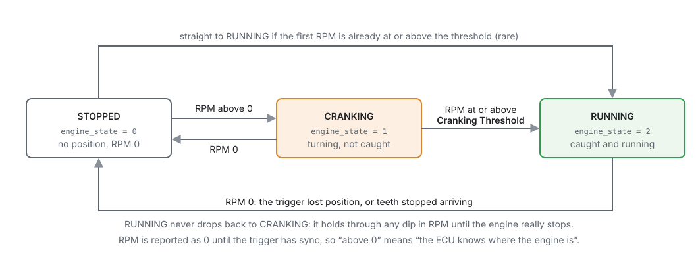
- STOPPED: the ECU has no engine position and RPM is 0. RPM stays 0 until the trigger has sync.
- CRANKING: RPM is above 0 but below Cranking Threshold
engine.cranking_rpm(default 400). - RUNNING: RPM has reached the Cranking Threshold. The state then holds RUNNING however low RPM dips, until RPM reaches 0 because the trigger has lost position or the teeth have stopped.
There is no "stall RPM" setting. The trigger's own watchdog decides when teeth have stopped arriving.
8 · When a change takes effect¶
Different parts of the ECU read these settings at different times (Figure 15.1):
- The scheduler (firing order, TDC angles, cylinder count, cycle, ignition mode, injection stages and modes, injector timing) keeps its own copy. A change reaches it the next time the engine is STOPPED. Changing how many cylinders a spinning engine has cannot be done safely, so the ECU waits. At that moment it also recomputes even-fire TDC angles and checks the firing order again.
- The fuel model and knock read Cylinders, Engine Cycle, Displacement, Bore, the stage count and modes straight away.
- Ignition Outputs and Injector Outputs act straight away.
- Cranking Threshold is read once, when the ECU starts. Burn it, then use Reset ECU (or switch the ignition off and on) for a change to take effect. A reset throws away changes you have not burned.
Change the engine's shape with the engine stopped
If you changed Cylinders or Engine Cycle while the engine ran, the fuel model would use the new value at once but the scheduler would keep the old one until the engine stopped. For that time the fuel would be worked out for one engine and delivered to another. So while the studio is connected and the engine is turning (speed above 0, or the trigger holding sync), every setting that waits for an engine stop is greyed out, and hovering it says Applies when the engine stops — stop the engine to change it. That covers every setting on these pages, the firing order table, and any button that writes one of them. Offline, or with the engine stopped, they are editable as usual.
9 · The output gateways¶
Ignition Outputs engine.ign_enable and Injector Outputs engine.inj_enable are two switches
that stop the engine firing, on purpose. Set Ignition Outputs to Off and no coil fires. Set
Injector Outputs to Off and no injector opens. They use the same cut path as the rev limiter and
the other cuts, so nothing can fire while they are off.
Use them to split a no-start problem in half: crank with no fuel to check for spark, or with no spark to check fuel delivery and to clear a flooded engine. Injector Outputs off also lets you build oil pressure on a fresh engine.
These switches survive a reset
Burn either switch Off and it stays off after the ignition is switched off and on. That is deliberate, so you can leave a job half done. It also means an engine that cranks and will not start may simply have one of these switched off. The Ignition System and Fuel System pages print a warning line while a switch is off. Check them first.
Before you start¶
Basic
You need:
- The engine's data: cylinder count, displacement, bore, and the firing order with the manufacturer's cylinder numbering. Get the numbering from the workshop manual. Firing orders are quoted against a numbering scheme, and the same engine family can number its cylinders differently from one maker to the next.
- For a V or flat engine, which cylinders are on which exhaust side, for the Bank column.
- For an odd-fire engine, the crank angle of each cylinder's TDC from the engine's data.
- The studio connected to the ECU (chapter 5), or a tune open offline. You can fill in every setting offline. The computed TDC angles then only appear after you connect.
Do this chapter before the trigger (chapter 16): the trigger decoder uses the engine cycle, and every TDC angle is measured from the reference the trigger defines. Outputs (chapter 18) come after this chapter, because the studio lays the coil and injector outputs out from these settings.
Setting it up¶
Basic → Intermediate
The pages are under Configuration ▸ Engine Configuration. The branch page itself summarises the engine and links to everything below it, in the order a new installation works through them.
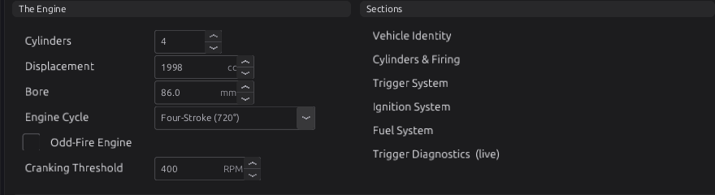
Below these panels the page shows Right Now: RPM, crank angle, run time, trigger errors and lamps for STOPPED, CRANKING, RUNNING, CRANK SYNC, PHASE SYNC and TRIG ERROR. Then comes A New Installation, In Order, the five steps of this and the next chapters as links.
Step 1 — Vehicle Identity¶
Open Engine Configuration ▸ Vehicle Identity and fill in Name, Make, Model, Engine, VIN and Notes. Each is a short text field of up to 32 bytes. Name, Make, Model and Engine also appear in the This Car panel of the branch page.
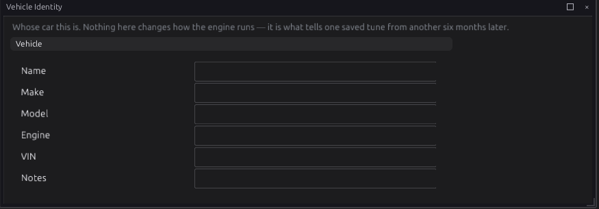
Use Notes
Notes is the place for what a future reader would otherwise have to guess: what was changed last, what is known to be marginal, what was never tested.
Step 2 — Cylinders & Firing¶
Open Engine Configuration ▸ Cylinders & Firing.
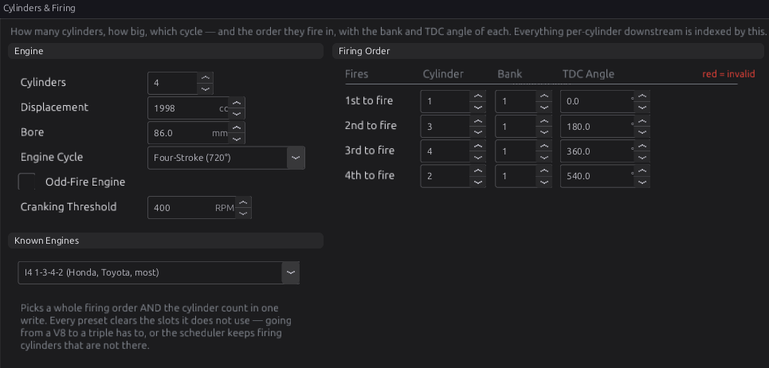
- Cylinders
engine.cylinder_count: the number of cylinders, 1 to 12 (default 4). On a rotary, enter three per rotor (see Example 4). The Firing Order table shows one row per cylinder. - Displacement
engine.displacement: total swept volume in cc (default 2000). - Bore
engine.bore_mm: in mm (default 0, not entered). Only the knock filter uses it. - Engine Cycle
engine.cycle_type: Four-Stroke (720°) (default), Two-Stroke (360°) or Rotary (1080°). - Odd-Fire Engine
engine.odd_fire: leave it off unless your engine fires at uneven intervals. - Cranking Threshold
engine.cranking_rpm: the RPM at which the engine counts as running, 100 to 2000 RPM (default 400). See Tuning it. - Firing order. The quick way is Known Engines: pick your engine's firing order from the list. It writes the whole order and the cylinder count in one go, and clears every slot the engine does not use. It holds 17 common orders from twins to V12s. To enter an order by hand, type the cylinder number into the Cylinder column of each row, first to fire at the top.
- Bank: for each row, 1 or 2. Leave every row on 1 for an inline engine.
- TDC Angle: on an even-fire engine, leave it alone. The ECU computes it. On an odd-fire engine, type each cylinder's TDC angle in crank degrees from 0.
- Burn the changes.
The Bank and TDC Angle in each row belong to the cylinder in that row, not to the position. If you change the order, each cylinder keeps its bank and TDC angle and moves with it.
The Right Now panel shows SYNC / NO SYNC and ORDER OK / ORDER BAD. While the
order is invalid, ORDER BAD lights and the Cylinder cells of the order turn red. Both come from the
ECU (the firing_order_fault channel), so they only work while you are connected. ORDER BAD responds
as you type, even with the engine running. The ECU applies the new order, and raises or clears P1651,
only at the next stop.
The TDC column updates after the engine stops
On an even-fire engine the TDC angles you see are the ones the ECU last computed. After you change the order or the cylinder count, the ECU recomputes them the next time the engine is stopped. The studio then reads them back. Offline, the column keeps whatever the tune holds.
Changing Cylinders by hand does not change the order
Only the Known Engines list writes the order and the count together. If you type a new Cylinders value, the order keeps its old entries. Going from 4 to 6 leaves positions 5 and 6 at 0, which is an invalid order. Going from 6 to 4 leaves cylinders 5 and 6 out of the first four positions, which is also invalid. Check ORDER OK after every change.
Step 3 — Ignition System (the coil settings)¶
Open Engine Configuration ▸ Ignition System. The Spark Hardware panel holds the two Engine settings for coils. The rest of the page (advance limits, fixed timing) is covered in chapter 20.
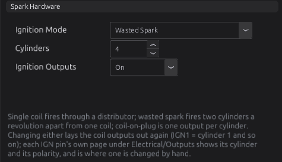
- Ignition Mode
engine.ign_mode: Single Coil (distributor), Wasted Spark (default) or Coil-on-Plug, to match how your coils are wired. - Ignition Outputs
engine.ign_enable: leave it On (default).
Changing Ignition Mode lays the coil outputs out again. Check the result on the IGN output pages (chapter 18).
Step 4 — Fuel System (the injector arrangement)¶
Open Engine Configuration ▸ Fuel System.
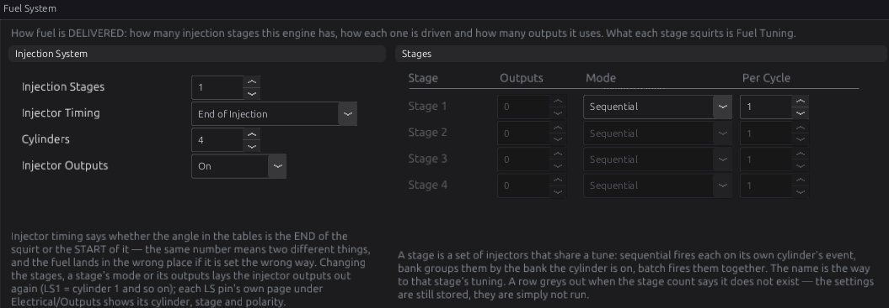
- Injection Stages
engine.num_inj_stages: 1 to 4 (default 1). - Injector Timing
engine.injector_timing_method: End of Injection (default) or Start of Injection. Set this before you tune the injection angle table, because the same angle means two different things. - Injector Outputs
engine.inj_enable: leave it On (default). - In Stages, for each active stage, choose the Mode, and for Bank or Multi-Point also Outputs (the injector count) and Per Cycle (injections per cycle). Each stage name links to that stage's tuning pages.
Changing the stage count, a stage's mode or its outputs lays the injector outputs out again: a block of LS outputs per stage from LS1. A pin already used as a generic output (a fan, say) is never taken. The injector moves to the next free pin instead.
Worked examples¶
Intermediate
Example 1 — 2.0 L inline four, wasted spark, sequential injection
A common four-cylinder with a crank wheel and a cam sensor.
| Setting | Value | Why |
|---|---|---|
| Cylinders | 4 | |
| Displacement | 1998 cc | from the engine's data |
| Bore | 86.0 mm | gives a knock band near 6.7 kHz |
| Engine Cycle | Four-Stroke (720°) | |
| Odd-Fire Engine | off | a four fires every 180° |
| Firing order | 1-3-4-2 (Known Engines: I4 1-3-4-2) | |
| Bank | 1 on every row | inline engine |
| Ignition Mode | Wasted Spark | two coil packs, one per pair |
| Injection Stages / Mode | 1 / Sequential | one injector per cylinder, cam sensor fitted |
| Injector Timing | End of Injection | the default |
The ECU computes TDC angles 0°, 180°, 360° and 540° for cylinders 1, 3, 4 and 2 (Figure 15.6). Wasted spark pairs cylinders 1 with 4 and 3 with 2, the cylinders 360° apart (Figure 15.2 A).
Example 2 — 5.7 L GM LS V8, coil-on-plug, two banks
| Setting | Value | Why |
|---|---|---|
| Cylinders | 8 | |
| Displacement | 5665 cc | |
| Bore | 99.0 mm | |
| Engine Cycle | Four-Stroke (720°) | |
| Firing order | 1-8-7-2-6-5-4-3 (Known Engines: V8 1-8-7-2-6-5-4-3 (GM LS)) | |
| Bank | 1 for cylinders 1, 3, 5, 7; 2 for 2, 4, 6, 8 | the engine's odd cylinders share one exhaust side |
| Ignition Mode | Coil-on-Plug | one coil per cylinder |
| Injection Stages / Mode | 1 / Sequential |
TDC angles come out 90° apart, in firing order. With the banks set, closed-loop lambda can correct each bank separately once a second wideband is fitted (chapter 23).
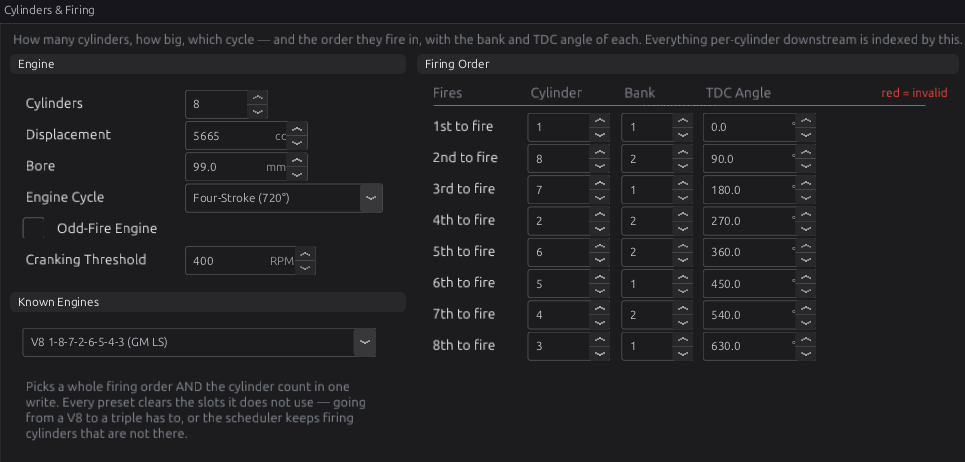
Example 3 — 90° V-twin, odd-fire
A twin that fires 270° and then 450° apart.
| Setting | Value | Why |
|---|---|---|
| Cylinders | 2 | |
| Engine Cycle | Four-Stroke (720°) | |
| Odd-Fire Engine | on | the gaps are not equal |
| Firing order | 1-2 | |
| TDC Angle | cylinder 1: 0°, cylinder 2: 270° | typed by hand |
| Ignition Mode | Coil-on-Plug | one coil per cylinder |
Check the angle for your engine: which cylinder follows by 270° and which by 450° depends on how the engine numbers its cylinders.
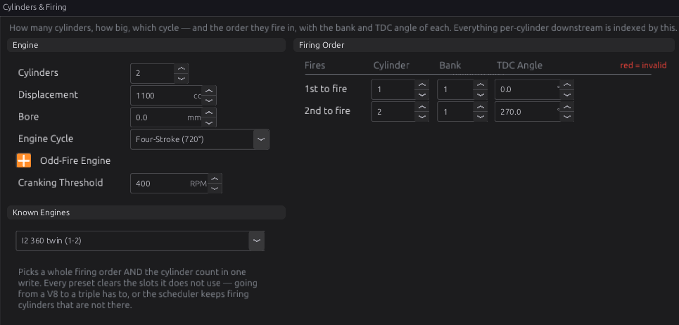
Example 4 — two-rotor rotary
On a rotary each rotor face counts as one cylinder: three per rotor. A two-rotor engine has six. Faces 1 to 3 belong to rotor 1, faces 4 to 6 to rotor 2.
| Setting | Value | Why |
|---|---|---|
| Engine Cycle | Rotary (1080°) | three shaft revolutions per cycle |
| Cylinders | 6 | 2 rotors × 3 faces |
| Displacement | 1308 cc | the quoted capacity; the fuel model divides it by the 2 rotors |
| Bore | 0 | no bore on a rotary; set Knock Frequency directly if you use knock (chapter 30) |
| Firing order | 1-4-2-5-3-6 | the rotors fire alternately, 180° apart |
The TDC angles come out 180° apart (Figure 15.2 C). Output rows name the rotor, not the face. The studio lays out leading coils on IGN1 and IGN2 and trailing coils on IGN5 and IGN6. With the 12-cylinder limit, the most rotors you can have is four.
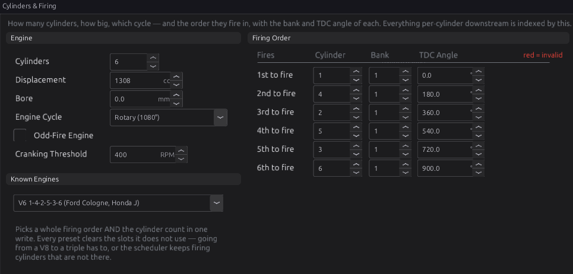
Tuning it¶
Intermediate → Advanced
There is little to tune here, but three things are worth checking on a running engine.
Log these channels: engine_state, rpm, sync_level, firing_order_fault, and while
fault-finding ign_exec_mask and inj_exec_mask (chapter 42).
Check the firing order¶
A wrong firing order still passes the ECU's check if it names every cylinder once. The engine then runs badly or not at all, because sparks and squirts go to cylinders that are not ready for them. To check what the ECU is actually doing, open Tools ▸ Engine Cycle while connected. It draws one captured cycle against crank angle, one lane per coil and injector. A coil's span is its dwell and its right-hand edge is the spark (chapter 20).
Confirm that TDC for cylinder 1 is where the ECU thinks it is with a timing light and Fixed Timing (chapter 16). Every other cylinder's TDC is measured from that reference.
Choose the Cranking Threshold¶
Cranking fuel, flood clear and cranking advance apply only while the state is CRANKING. The switch to RUNNING starts the after-start enrichment. So the threshold must sit:
- above the fastest your starter ever spins the engine, cold battery or warm. If it sits below that, the engine counts as running on the starter and loses its cranking fuel;
- below the lowest speed at which the engine runs on its own just after it catches.
The default 400 RPM suits most engines. Log rpm and engine_state through a few starts, hot and
cold. The state should change once, when the engine catches, and never while it is only on the
starter. Remember that a new value only takes effect after you burn it and restart the ECU.
Choose the injector timing method first¶
Decide End of Injection or Start of Injection before you tune the injection angle table (chapter 38), and do not change it afterwards. The same table would then place every squirt somewhere else.
Diagnostics¶
Intermediate
| Code | Meaning | What sets it | What to check |
|---|---|---|---|
| P1651 | Config: invalid firing order (duplicate or missing cylinder) | The firing order the ECU has applied does not name each cylinder from 1 to Cylinders exactly once. The ECU will not fire while it is set. | The Firing Order table; ORDER OK on Cylinders & Firing; a Cylinders value changed by hand. Clears when a valid order is applied at the next stop. |
| P1653 | Config: a cylinder in the firing order has no coil output | A cylinder in the order has no IGN output row serving it | The IGN output pages (chapter 18). Change Ignition Mode or Cylinders to have the studio lay the coils out again. |
| P1654 | Config: a cylinder in the firing order has no stage 1 injector output | A cylinder in the order has no stage 1 injector row | The LS output pages (chapter 18); the Fuel System stages |
All three are raised at severity level 3 and are judged against the settings the ECU has applied, not the ones you are typing. What level 3 does is set in Engine Protection (chapter 29). P1653 and P1654 are not checked while the order itself is invalid.
Output channels worth watching:
| Channel | Label | What it tells you |
|---|---|---|
engine_state |
Engine State | 0 STOPPED, 1 CRANKING, 2 RUNNING |
firing_order_fault |
Firing Order Invalid | 1 while the order as typed is invalid, even before it is applied |
sync_level |
Sync Level | 0 none, 1 crank, 2 phase (chapter 16) |
ign_exec_mask |
Ign Execution Mask | 0 while spark is cut, including by Ignition Outputs Off |
inj_exec_mask |
Inj Execution Mask | 0 while fuel is cut, including by Injector Outputs Off |
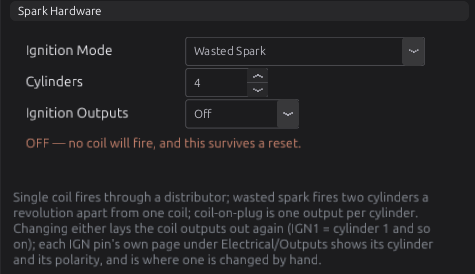
Troubleshooting¶
Basic → Advanced
| Symptom | Likely causes | Check |
|---|---|---|
| Cranks, syncs, no spark and no fuel at all | Firing order empty or invalid (P1651) | ORDER OK on Cylinders & Firing; the DTC list |
| Cranks, no spark, fuel is fine | Ignition Outputs off; a cylinder with no coil (P1653) | The orange warning on Ignition System; ign_exec_mask; the IGN output pages |
| Cranks, no fuel, spark is fine | Injector Outputs off; no stage 1 injector (P1654) | The orange warning on Fuel System; inj_exec_mask; the LS output pages |
| Runs, but rough and pops, one or more cylinders dead | Firing order wrong but valid; the engine numbers its cylinders differently from the source you used | The engine's own numbering; Tools ▸ Engine Cycle |
| ORDER BAD after changing Cylinders | The order still holds the old count's entries | Pick the order from Known Engines, or fill in every row |
| New firing order or cylinder count seems ignored | The engine has not stopped since the change (possible from Lua or another tool; the studio greys these settings out while the engine turns) | Stop the engine; the scheduler applies the change at the next stop |
| TDC Angle column shows old or zero values | Offline, or the engine has not stopped since the change | Connect and stop the engine; the ECU recomputes and the studio reads them back |
| TDC angles typed by hand keep changing back | Odd-Fire Engine is off, so the ECU overwrites them | Tick Odd-Fire Engine if the engine really is odd-fire |
engine_state shows RUNNING while the engine is still only on the starter |
Cranking Threshold below cranking speed | Log rpm while cranking; raise the threshold, burn, reset |
| Changed Cranking Threshold has no effect | It is only read when the ECU starts | Burn, then Reset ECU |
| Knock band wrong for the engine | Bore not entered (0 or 10 mm or less) | Bore, or set Knock Frequency directly (chapter 30) |
| Rotary fuelling far off, or faces firing in the wrong place | Cylinders set to the rotor count instead of the face count, or Engine Cycle not Rotary | Cylinders = 3 × rotors; Engine Cycle = Rotary; firing order as in Example 4 |
Settings reference¶
Every Engine and Vehicle setting, generated from the definition the studio loads. The per-cylinder tables (Firing Order, Bank, TDC Angle) and the Injection Stages rows are explained in How it works and Setting it up above.
Engine¶
| Setting | What it does |
|---|---|
Cylindersengine.cylinder_countRange: 1 to 12 Default: 4 |
How many cylinders the engine has. It sizes almost everything downstream — the per-cylinder tables, the trim scopes, the misfire codes — so it is one of the first things to get right and one of the worst to get wrong quietly. |
Boreengine.bore_mmRange: 0.0 to 200.0 Default: 0.0 Units: mm |
Cylinder bore. Used for the knock band: with Knock Frequency at 0 the band centre is derived from it (900 / (pi x bore/2) kHz — about 6.7 kHz for an 86 mm bore), because the ringing frequency of a knocking cylinder follows its bore. 0 = not entered, and the knock band then sits at a generic 7 kHz. |
Displacementengine.displacementRange: 1 to 30000 Default: 2000 Units: cc |
Total engine swept volume. The speed-density air model uses it — per-cylinder swept volume = displacement / cylinders. |
Engine Cycleengine.cycle_typeRange: one of: Two-Stroke (360°), Four-Stroke (720°), Rotary (1080°) Default: Four-Stroke (720°) |
How many crank degrees one complete engine cycle takes, which is the span every angle in the tune is expressed in. FOUR-STROKE is 720°, TWO-STROKE 360°, ROTARY 1080°. It also sets the default repeat rate for a crank-mounted trigger stream, so changing it moves the trigger decode as well as the scheduling. |
Ignition Modeengine.ign_modeRange: one of: Single Coil (distributor), Wasted Spark, Coil-on-Plug Default: Wasted Spark |
How the COILS are wired. The studio lays out the coil outputs from it (IGN1 = cylinder 1 and so on) whenever it changes; the pin pages are where they are then read or changed. WASTED SPARK: each coil output names ONE cylinder and also fires that cylinder's companion — the cylinder half an engine cycle away, taken from the firing order at run time, so a changed firing order never moves an output. It needs only crank sync. COIL-ON-PLUG needs cam PHASE sync to fire sequentially (before phase it fires companion pairs together). DISTRIBUTOR is one coil for every cylinder. A rotary's trailing plug comes from the engine cycle, not from here. |
Odd-Fire Engineengine.odd_fireRange: 0 to 0 Default: 0 |
Even-fire (0): every cylinder's TDC is COMPUTED from the firing order — position × cycle / cylinders — and the ECU writes it back into each cylinder's tdc_angle (studio shows the computed angle greyed out). Odd-fire (1): the engine does NOT fire at even intervals, so each cylinder's tdc_angle is directly editable instead. Injection mode and squirt count are NOT here — they are per injection stage (see inj_stage). |
Number of Injection Stagesengine.num_inj_stagesRange: 1 to 4 Default: 1 |
How many injection stages are active. Only inj_stage[0 .. num_inj_stages-1] are built and claimed; higher entries are ignored whatever they hold. Stage 1 is the primary; a second stage is the staged secondary; 3 and 4 are further stages. |
Injector Timing Methodengine.injector_timing_methodRange: one of: End of Injection, Start of Injection Default: End of Injection |
What the injection firing angle refers to (injector timing method). END OF INJECTION (default): the angle is where the pulse CLOSES, so the firmware opens the injector a pulse-width of angle earlier so it finishes on the set angle — the fuel lands at a fixed point regardless of how long the pulse is. START OF INJECTION: the angle is where the pulse OPENS, and it closes a pulse-width later. End is the common choice because it keeps the delivered charge's end point steady as pulse width grows with load. |
Cranking Thresholdengine.cranking_rpmRange: 100 to 2000 Default: 400 Units: RPM |
CRANKING->RUNNING. Above this RPM the engine has caught and is running (anchors post-start). |
Ignition Outputsengine.ign_enableRange: one of: Off, On Default: On |
Off stops every coil firing, the same way a rev limiter's spark cut does. For cranking with no spark — checking fuel delivery, or clearing a flooded engine. It SURVIVES A RESET, so an engine that cranks and will not start is worth checking here first. |
Injector Outputsengine.inj_enableRange: one of: Off, On Default: On |
Off stops every injector opening, the same way an overrun fuel cut does. For cranking with no fuel — checking for spark, or building oil pressure on a fresh engine. It SURVIVES A RESET, so an engine that cranks and will not start is worth checking here first. |
Vehicle¶
| Setting | What it does |
|---|---|
Makevehicle.MakeRange: 0 to 255 Default: 0 |
Vehicle manufacturer. Documentation only — nothing in the firmware reads any of these fields. They travel with the tune so a saved file identifies the car it belongs to, which matters as soon as there is more than one. |
Modelvehicle.ModelRange: 0 to 255 Default: 0 |
Vehicle model. Documentation only; see Make. |
Enginevehicle.EngineRange: 0 to 255 Default: 0 |
Engine designation — the thing most worth recording, since a tune is far more specific to the engine than to the body it sits in. Documentation only. |
Notesvehicle.NotesRange: 0 to 255 Default: 0 |
Free text about this vehicle or tune. Documentation only, and the right place for what a future reader would otherwise have to guess: what was changed, what is known-marginal, what was never tested. |
VINvehicle.VINRange: 0 to 255 Default: 0 |
Vehicle identification number. Documentation only — it is not checked against anything and does not gate any function. |
Namevehicle.NameRange: 0 to 255 Default: 0 |
A short name for this vehicle, for telling saved tunes apart at a glance. Documentation only. |
Related¶
- Chapter 5 — First connection
- Chapter 16 — The trigger system: the reference every TDC angle is measured from
- Chapter 18 — Outputs and the pin system: the coil and injector outputs these settings lay out
- Chapter 19 — Fuel: injector data and the fuel tables for each stage
- Chapter 20 — Ignition: advance, dwell and fixed timing
- Chapter 23 — Closed-loop lambda: per-bank correction
- Chapter 29 — Engine protection: what a level 3 fault does
- Chapter 30 — Knock: the knock band and the bore